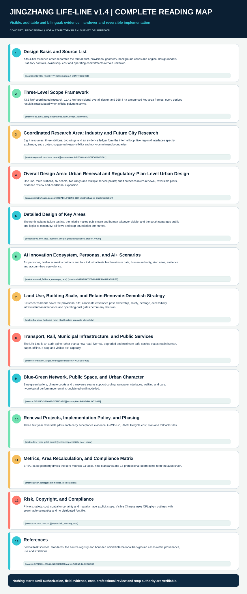
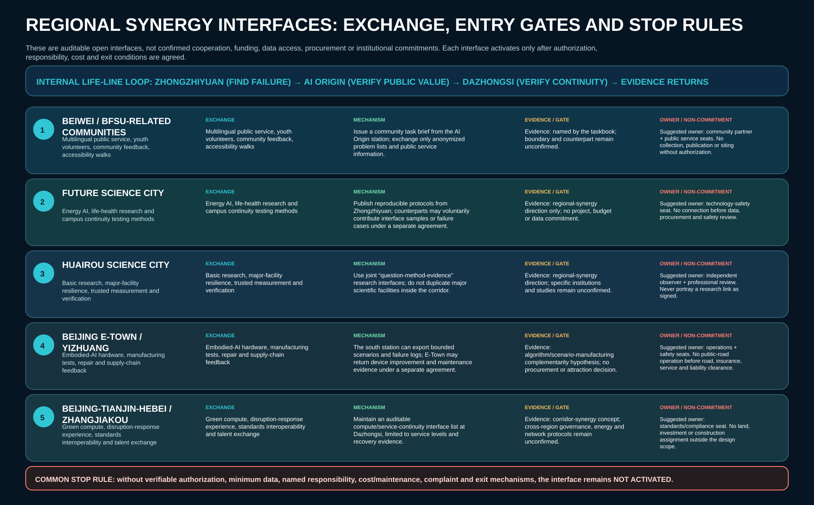
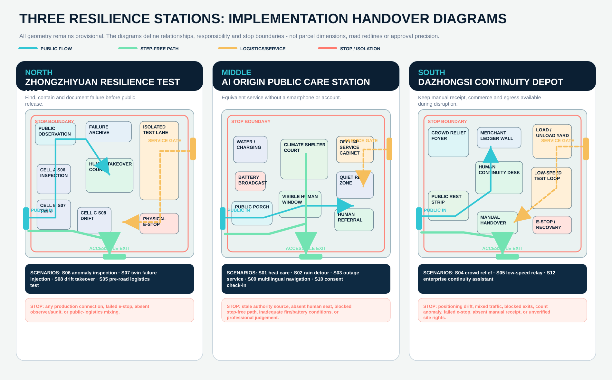
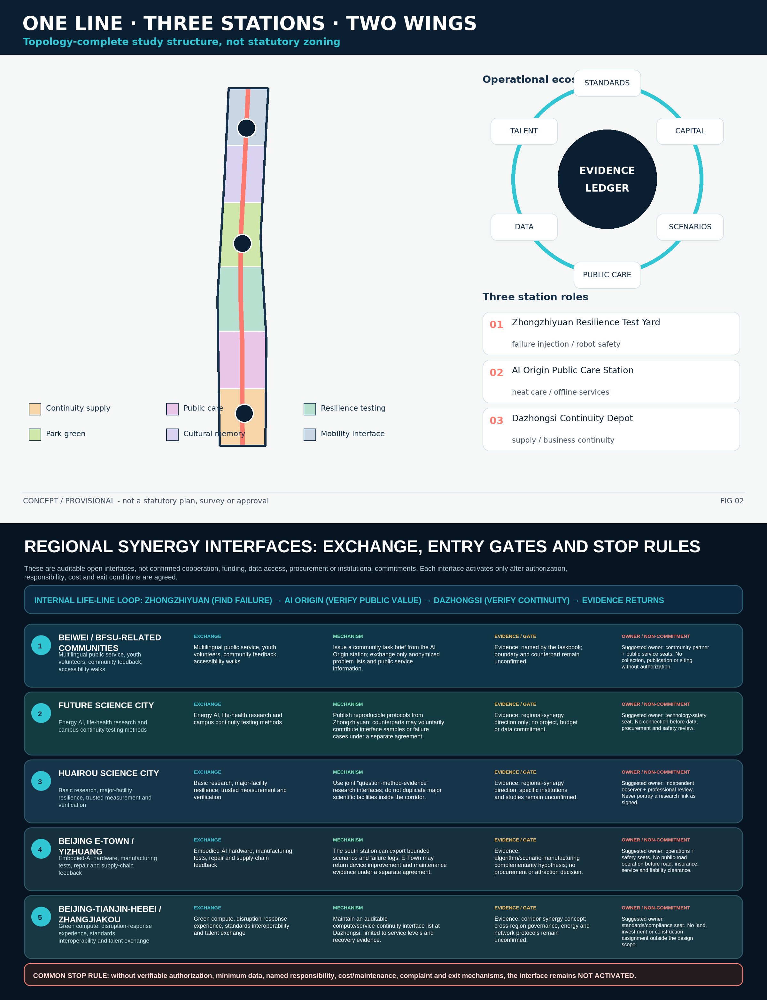
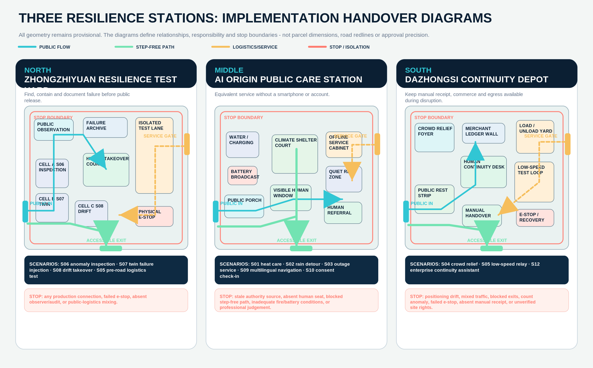
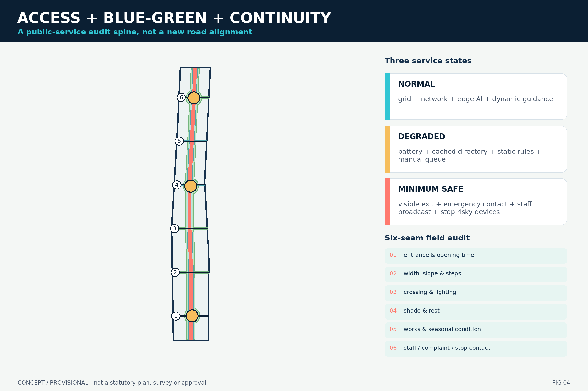
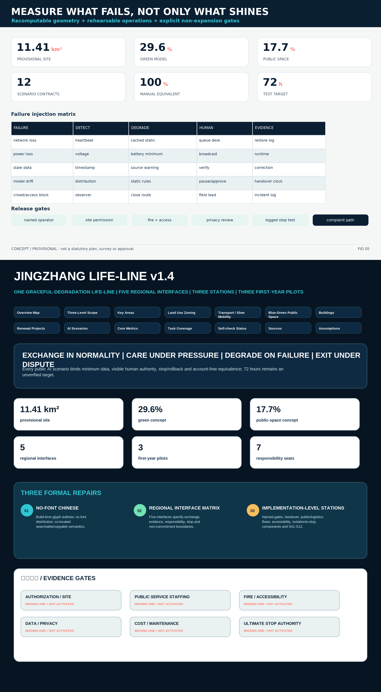

---
title: "Jingzhang Life-Line: Graceful-Degradation Urban Resilience and Public Care Commons"
author_github: "ustcsxl"
language: "en"
proposal_format_version: "2"
bilingual_contract_version: "1"
translation_of: "proposal.md"
license: "COMMUNITY-DISPLAY-ONLY"
summary: "A rehearsable, offline-capable and human-overridable public-service spine: one Life-Line, three resilience stations, twelve graceful-degradation AI scenarios and three reversible prototypes."
tracks: ["ai-public-services", "civic-agent-governance", "jingzhang-heritage-narrative"]
scenarios: ["ai-health-service-navigation", "ai-traffic-walkability", "public-safety-operations-review", "robot-delivery-low-speed", "ai-cultural-guide", "enterprise-service-copilot"]
iteration: "v1.4"
---
# Jingzhang Life-Line: Graceful-Degradation Urban Resilience and Public Care Commons
**Proposition.** The centennial Jing-Zhang corridor should be more than a showcase of future technology. It can become a public-service life-line that still offers understandable, accessible and accountable assistance during extreme heat, heavy rain, power or network loss, model drift and event crowding. The governing rule is: sociable in normal conditions, caring under stress, safely degradable under failure, and easy to exit under dispute. The 72-hour continuity period is a design target for rehearsals and reversible pilots, not existing performance or a guarantee. [source:AGENT-TASKBOOK] [metric:continuity_target_hours]

## Design Basis and Source List
The proposal uses a four-level evidence hierarchy. First are the official announcement, repository taskbook, standard registry and source registry, which define the commission, evidence boundaries and professional handover. Second is the maintainer-provided provisional geometry, usable only for directional composition and EPSG:4548 recalculation. Third are official government, international-organisation and city case sources, used only for comparison. Fourth are this package's original concept geometry, figures, prototypes and test contracts, which never represent surveyed conditions, official controls or public opinion. [source:SOURCE-REGISTRY] [depth:existing_conditions_diagnosis]
The formal task basis includes the 2026 announcement, Agent taskbook, layer and type enumerations, schemas and validation contract. The overall area and all three key-area frames are rough substitutes supplied in the repository. They support relative geometry, order-of-magnitude area and display, but cannot define parcels, ownership, road redlines, rail protection, heritage controls, municipal capacity or construction positions. [source:OFFICIAL-ANNOUNCEMENT] [data:geometry/site_boundary.geojson#PROV-SITE-001]
Background references include the 2026 WHO heat-health action guidance, UNDRR resilience scorecard, China's emergency-shelter planning guide, Beijing's sponge-city design standard, and official cases from Barcelona, Helsinki, Seoul, Singapore and New York. They contribute methods such as governance, warnings, at-risk populations, real-city testing, resident participation and procurement boundaries. They do not provide Beijing trigger thresholds, project approvals, service capacities or committed operators. [source:WHO-HEAT-HEALTH-2026] [source:MEM-SHELTER-PLANNING-GUIDE]
Five critical gaps remain: cleared official polygons and survey; verified buildings, ownership and safety; statutory planning and specialist control lines; transport, municipal, energy and communication capacity; and operator, procurement, cost, insurance and data-authorisation agreements. FAR, height, total floor area and cost therefore remain `unknown`. The 72-hour target, exercise cadence and scenario performance remain explicitly unverified design targets. [assumption:A-CONTROLS-001] [metric:floor_area_ratio]
## Three-Level Scope Framework
At the **43.6 km2 coordinated research scale**, the proposal organises industry, talent, capital, compute, data, scenarios and public life across the three zones and two wings. This level does not control parcels. It defines exchange loops: the Zhongguancun wing supplies standards, compliance, finance and talent interfaces; the Xiaoyuehe wing supplies blue-green, heat-health and rainstorm test interfaces; the three resilience stations host different verification and operating roles. [source:OFFICIAL-ANNOUNCEMENT] [metric:coordinated_research_area_sqm]
At the **overall design scale**, the submitted provisional polygon recalculates to approximately **11.41 km2** in EPSG:4548. It carries one Life-Line, three resilience stations, six accessible verification seams and two wing interfaces. The geometry is a conceptual urban-design model rather than a statutory plan; all ratios are recalculable design quantities limited by the provisional boundary. [data:geometry/site_boundary.geojson#PROV-SITE-001] [metric:site_area_sqm]
At the **key-area scale**, the announced approximate total is 368.4 hectares. The three non-overlapping provisional frames become a Resilience Test Yard, Public Care Station and Continuity Depot. Detailed work covers role, spatial structure, carrier buildings, movement, public space, AI scenarios, operations, risks and exit rules, without claiming exact parcel or approval boundaries. [data:geometry/key_areas.geojson#PROV-KEY-003] [metric:announced_key_area_total_sqm]
When cleared official polygons arrive, every derived layer, area, ratio, drawing, matrix and self-check must be regenerated. The handover sequence is version-and-source lock, EPSG:4548 projection, clipping, topology and key-area checks, metric recomputation, map regeneration and professional site review. [assumption:A-BOUNDARY-001] [depth:three_level_scope_framework]

## Coordinated Research Area: Industry and Future City Research
The name is **Jingzhang Life-Line / JZ-LIFE**. Its original identity uses two rail-like open rings: the inner ring represents Jing-Zhang industrial memory; the outer ring represents public care. Three interruptions mark the resilience stations, while the openings make entry, exit and human handover visible. The mark does not reuse an official railway or corporate identity and is not represented as an approved public brand. [source:AGENT-TASKBOOK] [assumption:A-HERITAGE-001]
The ecosystem is organised as eight resources, three stations, two wings and one evidence ledger. The eight resources are land, space, industry, capital, talent, compute, data and scenarios. Zhongzhiyuan contains isolated failure testing for AI, robots, sensors and digital twins. AI Origin connects heat care, accessible public services and community co-creation. Dazhongsi focuses on low-speed logistics, event load shedding and continuity for small businesses. The two wings provide standards, compliance, finance and blue-green scenario interfaces. [source:HD-AI-BELT-2026] [depth:overall_spatial_structure]
Seven official cases are translated into mechanisms rather than copied forms. One-north shows the value of adjacency between research, start-ups, living and exchange, while this proposal adds public-service floors and exit rules. Helsinki demonstrates real-city testing with residents and explicitly states that testing is not a procurement bypass. NYC provides a controlled institutional entry for companies and academic teams. Barcelona makes climate refuges legible as a network. WHO links governance, warning, vulnerable groups, communication, service resilience and learning. UNDRR turns resilience into cross-department questions. Seoul shows a living-lab approach, but this proposal rejects default surveillance, personal scoring and relationship profiling. [source:JTC-ONE-NORTH] [source:HELSINKI-TESTBED] [source:NYC-SMART-CITY-TESTBED]
Agent task 1 is answered by the one-line/three-station/two-wing spatial and functional framework. Agent task 2 is answered by the eight-resource ecosystem, global case transfer and four bounded industrial test scenarios. Value is measured by whether a test can expose failure, transfer authority to a human, preserve evidence and produce a clear scale/change/stop decision, not by the number of devices deployed. [metric:industrial_test_scenario_count] [standard:PROJECT-AGENT-OPEN-CALL-TASKBOOK]
### Regional Synergy Interface Matrix: Auditable Exchange Rather Than Narrative Arrows
The internal “three areas and two wings” loop explains how capability, public value and operating evidence circulate inside the Life-Line. External synergy must answer five additional questions: what is exchanged, who initiates, what evidence opens the interface, what stops it, and which matters are explicitly not commitments. The five interfaces below remain outside the design boundary and do not imply signed cooperation. [source:AGENT-TASKBOOK] [metric:regional_interface_count]
| Interface | Exchange | Mechanism | Evidence and entry gate | Suggested owner and non-commitment boundary |
|---|---|---|---|---|
| Beiwei / BFSU-related communities | Multilingual service, youth volunteers, community feedback, accessibility walks | The AI Origin station issues a community task brief and quarterly walk-through; only anonymized problem lists and public service information are exchanged | Named by the taskbook; boundary, counterpart and authorization remain unconfirmed | Community-partner + public-service seats; no collection, publication or siting without authorization |
| Future Science City | Energy AI, life-health research and campus continuity methods | Zhongzhiyuan publishes reproducible protocols; counterparts may provide interface samples or failure cases under a separate agreement | Regional-synergy direction only; no project, budget, data or procurement commitment | Technology-safety seat; no connection before data, procurement and safety review |
| Huairou Science City | Basic research, major-facility resilience, trusted measurement and verification | Joint “question-method-evidence” research interfaces; no duplication of major science facilities inside the corridor | Regional-synergy direction; specific institutions and studies remain unconfirmed | Independent observer + professional review; never portray an intention as signed |
| Beijing E-Town / Yizhuang | Embodied-AI hardware, manufacturing tests, repair and supply-chain feedback | The south station exports bounded scenarios and failure logs; manufacturing partners may return improvement and maintenance evidence under a separate agreement | Algorithm/scenario-manufacturing complementarity hypothesis; no procurement or attraction decision | Operations + safety seats; no public-road operation before road, insurance, service and liability clearance |
| Beijing-Tianjin-Hebei / Zhangjiakou | Green compute, disruption-response experience, standards interoperability and talent exchange | Dazhongsi maintains an auditable compute/service-continuity interface list limited to service levels and recovery evidence | Corridor-synergy concept; cross-region governance, energy and network protocols remain unconfirmed | Standards/compliance seat; no land, investment or construction assignment outside the design scope |
Every interface defaults to `not_activated`. It may enter a reversible pilot only when authorization, minimum data, named responsibility, cost/maintenance, complaint and exit mechanisms are verifiable. The performance measure is not the number of partnerships announced, but the number of reproducible exchange loops completed, boundary problems found, and interfaces correctly stopped for insufficient evidence.

## Overall Design Area: Urban Renewal and Regulatory-Plan-Level Urban Design
The diagnosis begins with four stress conditions. A linear park and innovation district may work in normal conditions yet lose continuous public service during heat, rain, blackout or crowding. AI pilots often show success without exposing failure, authority or exit evidence. Rail, roads, communities, campuses and parks contain accessibility and operating seams. Finally, missing statutory, as-built, utility and ownership data can make a concept drawing appear more precise than it is. The plan therefore repairs continuity and evidence before adding iconic form. [source:BEIJING-JZ-PARK-PHASE2-PLAN] [assumption:A-PHASE2-ASBUILT-001]
The spatial structure is **one line, three stations, six seams, two wings and multiple service points**. The approximately **9.66 km** conceptual spine combines slow mobility, blue-green buffering, offline information and human support. Six cross-seams are questions for field verification of crossings, entrances, station interfaces and accessible continuity. Reversible service points provide shade, water, charging, rest, broadcasting, paper registration and a human handover desk. [data:geometry/roads.geojson#ROAD-LIFELINE-001] [metric:connector_audit_count]
A complete study partition uses six allowed land-use codes for continuity supply, community care, research testing, park green, cultural display and mobility interfaces. These are conceptual study bands, not existing or statutory land use. Public and green spaces cross the bands because public-service continuity should not stop at a parcel edge. Building footprints are candidate carrier envelopes subject to ownership, structural, fire, accessibility, utility and operator gates. [data:geometry/land_use.geojson#LU-001] [standard:MNR-LAND-USE-CLASSIFICATION-GUIDE]
Implementation follows audit, micro-renewal, reversible pilot, evidence review and conditional expansion. The first phase completes accessibility, shade, power, communication, fire, operation and complaint registers. Micro-renewal adds removable shade, seating, water, legible guidance and human desks. Pilots must remain removable, offline-capable and overridable. Expansion requires named responsibility, approvals, cost and maintenance evidence. [depth:phasing_implementation] [assumption:A-OPERATIONS-001]
FAR, height, total floor area, parking quantity, road section and municipal capacity remain unknown. Principles such as low-rise, reversible, light-touch, open ground floors and cooling roofs may guide later work, but no statutory number is invented. The submitted footprint area is a concept quantity, not surveyed or approved building scale. [metric:building_height_m] [depth:development_intensity_controls]
## Detailed Design of Key Areas

**Zhongzhiyuan Resilience Test Yard** makes failure visible before a system reaches the city. An isolated test corridor, human-handover court, three reconfigurable cells and a public observation gallery support synthetic or authorised data, failure injection, physical emergency stop, rollback and evidence review. Robots and infrastructure models do not connect to production control. Public space displays discovered failures, operator interventions, repairs and stop decisions rather than only successful demonstrations. [data:geometry/key_areas.geojson#PROV-KEY-001] [assumption:A-SITE-VERIFY-001]
Its primary scenarios are infrastructure anomaly inspection, digital-twin fault injection, model-drift handover and pre-road low-speed logistics testing. Each test declares scope, data, observer, stop condition, rollback, complaint and deletion. The near-term action is a tabletop and enclosed-site test. Unclear rail protection, fire, authorisation or mixed-traffic risk blocks public-route release. [source:HELSINKI-TESTBED] [metric:industrial_test_scenario_count]
**AI Origin Public Care Station** is designed so that a person without a smartphone can receive equivalent service. A public porch, climate-refuge courtyard, staffed window, offline service cabinet and accessible rest loop host heat care, rain detours, blackout information, multilingual navigation, privacy-preserving capacity check-in and community events. AI retrieves, translates, routes and signals capacity; medical, legal, emergency and entitlement decisions transfer to qualified humans. [data:geometry/key_areas.geojson#PROV-KEY-002] [standard:BARRIER-FREE-ENVIRONMENT-LAW]
Its minimum package includes shade, ventilation, water, charging, movable seating, legible type, tactile/audible support and battery broadcasting. The blue-green courtyard is conceptual until hydrology and utilities are modelled. A four-seat operation model covers public service, community partnership, technical maintenance and privacy/complaints. Missing responsibility automatically reduces the service scope. [source:WHO-HEAT-HEALTH-2026] [assumption:A-CLIMATE-THRESHOLD-001]
**Dazhongsi Continuity Depot** helps small businesses, events and neighbourhood supply maintain a manual backup. A convertible delivery court, bounded low-speed loop, business continuity desk, crowd-load-shedding lobby and public rest strip organise paper orders, backup contacts, manual receipt, temporary power interfaces and reversible AI advice. Low-speed devices operate only on authorised routes, fixed time windows, with a visible observer and working stop control. [data:geometry/key_areas.geojson#PROV-KEY-003] [assumption:A-DAZHONGSI-ANCHOR-001]
Because the provisional Dazhongsi frame is not station-anchored, the proposal does not draw a precise station link, distance or property position. It defines a handover: obtain official geometry, audit the station walk, verify loading and fire conditions, then select a site. Crowd services use anonymous counts and human control, not facial identification or personal risk scores. Business advice is a checklist draft; legal, tax, contractual and financial decisions remain professional work. [source:NYC-SMART-CITY-TESTBED] [assumption:A-OPERATIONS-001]
All three stations share a spatial language - low-rise, reversible, maintainable, visible exit, staffed desk before technology - and an evidence language: named responsibility, takeover, stop, appeal, deletion and non-expansion conditions. [depth:three_key_area_detailed_design] [metric:resilience_station_count]
## AI Innovation Ecosystem, Personas, and AI+ Scenarios
Six personas act as exclusion tests. An older resident needs shade, rest, trusted information and human service without a phone. A wheelchair user needs verified step-free continuity, slopes, crossings and accessible toilets. An AI engineer needs isolated testing, synthetic data, observable failure and release gates. A small merchant needs continuity checklists for power, logistics and staffing. A public operator needs authoritative sources, stop authority and replayable logs. A visitor or student needs multilingual context, understandable risk and a public experience without tracking. [metric:persona_count] [assumption:A-DATA-001]
The twelve scenario cards bind place, user, data, human authority, stop rule and evidence. S01 heat refuge routing, S02 accessible rain detours, S03 blackout continuity, S04 crowd load shedding, S09 multilingual navigation, S10 privacy-preserving capacity check-in, S11 cultural guidance and S12 enterprise continuity are public-service scenarios. S05 low-speed supply relay, S06 anomaly inspection, S07 digital-twin fault injection and S08 model-drift handover are bounded industrial tests. All twelve have an account-free or manual equivalent; the resulting 1.0 metric is a design-contract coverage value, not verified field performance. [data:geometry/public_space.geojson#PUBLIC-LIFELINE-001] [metric:manual_fallback_coverage_ratio]
Three prototypes deepen the proposal beyond cards. PT-01 tests an offline service kit through network and primary-power loss, including paper maps, battery signs, manual queues, restoration and deletion. PT-02 injects stale data, drift and operator absence to measure pause, explanation, handover and rollback. PT-03 deploys a reversible public-space module with shade, water, charging, accessible rest, staffed support and a reconfigurable logistics bay, reviewed for fire, maintenance and crowd conditions. [source:UNDRR-RESILIENCE-SCORECARD] [metric:scenario_card_count]
The common AI contract requires minimum data, authoritative source and timestamp, no substitution of model confidence for professional authority, human pause/override/rollback, public explanation/appeal/exit, and a ledger of failure, complaint and correction. Facial recognition, emotion inference, contact-graph analysis, persistent precise trajectories, cross-context identity joining and direct AI control of medical, enforcement, planning-permission or high-risk allocation decisions are excluded. [standard:GENERATIVE-AI-INTERIM-MEASURES] [assumption:A-AI-SAFETY-001]
## Land Use, Building Scale, and Retain-Renovate-Demolish Strategy
The topology-complete land-use study layer applies repository-permitted codes 09, 0702, 0802, 1401, 0803 and 1207 to six bands for continuity supply, public care, research testing, green space, cultural interpretation and mobility interfaces. These boundaries organise design questions; they do not represent cadastral, current or statutory land use. [data:geometry/land_use.geojson#LU-004] [standard:MNR-LAND-USE-CLASSIFICATION-GUIDE]
The conceptual green layer is **29.6%** of the provisional site and public space is **17.7%**. They overlap by design because a cooling commons can be both green and public-service space. Candidate building footprints occupy approximately **4.2%**, expressing only the spatial need for reversible carriers. All quantities are recomputable from submitted geometry and must change with official boundaries or field decisions. [metric:green_ratio] [metric:public_space_ratio] [metric:building_footprint_ratio]
Retain-renovate-demolish decisions pass six gates: ownership/use rights; structure, fire and seismic safety; heritage and character; accessibility and public reach; utilities and maintenance; and operator/lifecycle cost. A carrier can be retained and lightly adapted only after all gates. Repairable deficits may lead to limited renovation. Major conflict or safety issues require separate professional study. Every submitted envelope remains `pending_field_structure_ownership_review`; the package makes no demolition decision. [data:geometry/buildings.geojson#BLDG-001] [depth:retain_renovate_demolish]
Massing principles are staff in front and equipment behind; low-rise and reversible; continuous shade and visible exits; honest industrial materials; roofs prioritising cooling, with energy systems only as engineering interfaces. FAR, height, setbacks, floor area and underground space remain unknown. The three pilgrimage landmarks are public evidence spaces rather than towers. [metric:floor_area_ratio] [metric:building_height_m]
## Transport, Rail, Municipal Infrastructure, and Public Services
The Life-Line is a slow-mobility and public-service audit spine, not a new road alignment. Six transverse seams record entrances, width, slope, steps, crossings, lighting, shade, opening time, works, winter and rain conditions. Before field review, each line means “a connection requiring verification.” Motor vehicles, cycles, low-speed devices and pedestrians are separated by time and space in key areas; a robot never enters open mixed traffic without authorisation and observation. [data:geometry/roads.geojson#ROAD-SEAM-01] [assumption:A-ACCESS-001]
Rail information remains bounded. Public sources establish a Jing-Zhang park and transport context, but this package lacks rail protection, as-built entrances, station-walk and construction data. It proposes no bridge, tunnel or new station and does not treat the provisional Dazhongsi frame as station-anchored. [source:BEIJING-JZ-PARK-PHASE1] [assumption:A-DAZHONGSI-ANCHOR-001]
Municipal continuity uses three service states. Normal operation may use grid power, network, edge compute and dynamic information. Degraded operation retains battery lighting, offline directories, static rules, paper registration and limited charging. Minimum-safe operation keeps legible exits, emergency contact, human broadcasting and all high-risk equipment stopped. The 72-hour target checks information and minimum care continuity, not building energy autonomy or certified shelter capacity. [metric:continuity_target_hours] [assumption:A-CONTINUITY-TARGET-001]
Digital infrastructure includes disconnectable edge compute, device identity, time synchronisation, audit logs, deletion, backup communication and a public status board. Important control has physical emergency stop and human release. Conventional infrastructure - water, sanitation, fire, drainage, waste, light and accessibility - remains the first gate; technology cannot conceal a capacity gap. [standard:MEM-SHELTER-PLANNING-GUIDE] [depth:municipal_new_infrastructure]

## Blue-Green Network, Public Space, and Urban Character
The blue-green system combines a Life-Line buffer, three climate courts and six transverse green seams. It seeks to reduce walking exposure and heat stress, create maintainable detention interfaces, connect the park with communities and innovation spaces, and host reversible care, culture and bounded testing. Area is reproducible; stormwater volume and flood reduction are not claimed without rainfall, soil, groundwater and pipe-network models. [source:BEIJING-SPONGE-STANDARD] [assumption:A-HYDROLOGY-001]
Heat care becomes an operated service rather than a generic cool space. Opening status and warning timestamp are visible. Shade, water, rest, accessibility, staffed support and referral are available without registration. The service does not diagnose health. Closure or failure points to another confirmed location and a human contact. Barcelona and WHO inform the network logic, while Beijing thresholds, facility classes and responsibilities remain local decisions. [source:BARCELONA-CLIMATE-SHELTERS] [source:WHO-HEAT-HEALTH-2026]
Urban character follows five rules: railway scale, material honesty, visible care, restrained technology and night-time comfort. Equipment does not dominate public facades. Lighting avoids glare and excessive media display. Identity is original and avoids official or corporate imitation. AI is located behind legible service procedures and visible human responsibility, not presented as a spectacle. [standard:MOHURD-URBAN-DESIGN-MEASURES] [assumption:A-HERITAGE-001]
Three pilgrimage landmarks celebrate contribution rather than a model or firm: the Failure Archive Wall in the north, Human Handover Pavilion in the middle and Continuity Ledger in the south. Each includes source, version, correction and removal rules. Before heritage, site and safety review, they remain reversible concept exhibits. The cultural narrative has three acts: railway connects the city; innovation connects knowledge; the future Life-Line connects care and choice. [metric:landmark_count] [source:BEIJING-JZ-PARK-PHASE1]
## Renewal Projects, Implementation Policy, and Phasing
Twelve projects are ordered evidence-first: official geometry and data handover; six-seam accessibility audit; three-station responsibility and stop-authority agreement; reversible summer refuge; offline kit and manual-queue rehearsal; northern failure-injection lab; southern bounded supply-relay test; minimum guidance/help package; hydrology and utility model; public and heritage review of three landmarks; evidence ledger and complaint correction; independent cost, maintenance, procurement and expansion review. [metric:project_count] [data:geometry/phasing.geojson#PHASE-01]
The **0-18 month** phase covers data, site audit, tabletop exercises and reversible heat, blackout, handover and accessibility pilots. **18-36 months** may integrate the three stations and implement essential micro-renewal after site and professional approval. **36-72 months** makes an evidence-based scale, change or stop decision. Missing operator, budget, maintenance, complaint path, stop authority or safety/accessibility/privacy review blocks expansion. [depth:phasing_implementation] [assumption:A-OPERATIONS-001]
A proposed policy bundle combines a city-test permit, public-interest contract and failure-evidence ledger. The permit defines place, time, data, equipment, observer and stop. The contract defines account-free equivalence, accessibility, human authority, deletion and appeal. The ledger records success, failure, complaint, repair, rollback and exit. Pilots never bypass planning, procurement, fire, transport, data or emergency rules. [source:HELSINKI-TESTBED] [assumption:A-COST-001]
Long-term operations use four seats plus an independent safety lead: site/public service, technical/cybersecurity, accessibility/community, and privacy/complaints. Quarterly rehearsals address power/network loss, heat care, rain and accessibility, and crowd/supply continuity. Annual reporting includes failures and stopped projects, not only achievements. Life-Line Open Rehearsal programming includes red-team week, accessible walks, climate-care season, low-speed safety day, Jing-Zhang memory school and a continuity forum. [metric:planned_rehearsal_count_per_year] [standard:PROJECT-AGENT-OPEN-CALL-TASKBOOK]
### Three Reversible First-Year Pilots, Acceptance Evidence and Responsibility Interfaces
The first year begins with three pilots that can clearly succeed or fail, rather than permanent construction. Suggested responsibility seats describe functions only and do not imply that any real institution has committed.
| Pilot | Minimum action | Acceptance evidence | Go / No-Go gate | Exit and rollback |
|---|---|---|---|---|
| Y1-01 Human-takeover demonstrator | A removable staffed window, paper directory, offline cabinet and takeover timer at an AI Origin candidate carrier | Network/stale-data injection log; pause-to-takeover time; account-free completion; complaint closure | Site authorization, staffed public service, fire/accessibility review and minimum-data design must all pass | If AI is the only route, the human seat is absent or complaints cannot be handled, disable the digital service and restore human-only operation |
| Y1-02 Continuous-care audit seam | Audit one representative route without permanent works: entrances, slope, shade, static guidance, offline navigation and human help | Continuous step-free/alternative route record; night/rain recheck; detour distance; paper-map and human-help availability | Rights/opening hours, crossing safety, step-free continuity and maintenance responsibility must be clear | Remove the “continuous route” claim if any critical segment is inaccessible, unverified or unmaintained |
| Y1-03 Degradable industrial test yard | Inject power/network loss, stale data, model drift and device failure in a closed Zhongzhiyuan environment | E-stop, isolation, human review, rollback and evidence logs; zero production connection; repair report | Site, insurance, observer, network isolation, recovery and responsibility agreement must all pass | Abort and quarantine the version on production connection, failed e-stop, absent responsible person or public-logistics mixing |
**Responsibility matrix.** Seven suggested seats cover authorization/site, public service, operations/maintenance, technology safety, data/privacy, accessibility/community and independent observation. Every pilot agreement must name Responsible / Accountable / Consulted / Informed roles and an ultimate stop authority.
**Lifecycle-cost gate.** The first year may use L/M/H ranges instead of invented currency values, but must cover design/approval, components/equipment, energy/communications, human staffing, cleaning/repair, software/model updates, insurance/training and exit/removal. No pilot becomes permanent before independent lifecycle-cost review.
**Service-level evidence.** Public interfaces record source freshness, system state, takeover timing, account-free equivalence, appeal response, recovery and removal decisions. The 72-hour value remains a design target; the first year proves only whether failure can degrade safely and leave evidence. [metric:first_year_pilot_count] [metric:responsibility_seat_count] [assumption:A-PILOT-AUTH-001]
## Metrics, Area Recalculation, and Compliance Matrix
All core geometry metrics are recomputed in EPSG:4548: approximately **11.41 km2** site area, **29.6%** green space, **17.7%** public space, **4.2%** candidate footprint and **9.66 km** Life-Line. Green and public space overlap. Footprints are not existing buildings. Precision is bounded by provisional geometry. `metrics.json` records formula, source, confidence and assumptions; HTML metric attributes match the machine values. [metric:site_area_sqm] [metric:green_ratio] [metric:public_space_ratio]
The metric system avoids “more is always better.” Green and public-space ratios test whether care has spatial capacity. Candidate footprints preserve reversible, low-impact delivery. Scenario counts matter only with human and stop contracts. The 72-hour target must be rehearsed in stages. A high normal-mode accuracy does not justify release when a service cannot degrade safely. [source:UNDRR-RESILIENCE-SCORECARD] [assumption:A-CONTINUITY-TARGET-001]
The compliance matrix maps all 23 official and Agent requirements to narrative, geometry, metrics, drawings, sources, standards, assumptions and four self-check gates. The standard matrix distinguishes addressed requirements from data gaps. The design-depth matrix covers diagnosis, scopes, structure, land use, intensity, buildings, transport, infrastructure, blue-green space, key areas, projects, phasing, metrics and risk. The matrices are an audit index, not a substitute for readable design. [depth:metrics_recalculation] [standard:PROJECT-OFFICIAL-ANNOUNCEMENT]

## Risk, Copyright, and Compliance
Eight dimensions are managed: privacy, implementation complexity, public acceptance, operating cost, policy uncertainty, spatial dispute, technology maturity and equity. Controls include no biometric or relationship profiling; minimum data and deletion; reversible components; staff-first interfaces; cross-vendor repairability; compliance with planning and procurement; persistent provisional warnings; isolated testing, drift detection and rollback; accessible walks and paper/phone/staff equivalents. [assumption:A-DATA-001] [assumption:A-COST-001]
The central risk is not insufficient intelligence but continued trust in an incorrect service. Every public interface therefore shows source, update time, service state and human responsibility. Low confidence, stale data, network loss, drift, missing audit or absent operator causes degradation or stop. Models remain advisory evidence and do not directly control medical, enforcement, planning permission or rights allocation. [assumption:A-AI-SAFETY-001] [standard:GENERATIVE-AI-INTERIM-MEASURES]
The three stations are urban-design concepts, not certified emergency shelters, medical facilities or command centres. Heat routing is not medical advice. The 72-hour value is not certification. Low-speed devices are not authorised road operation. Backup power is not an energy guarantee. Local meteorological, health, emergency, fire, transport, rail, data and site agreements are required. [source:MEM-SHELTER-PLANNING-GUIDE] [assumption:A-CLIMATE-THRESHOLD-001]
Text, identity, diagrams, HTML, PDF layout and concept geometry are original to this submission. No third-party portraits, corporate marks, map tiles, photographs, music or video are reproduced. External cases contribute only factual references registered in `sources.json`. Figures identify concept and provisional status and never represent generated imagery as site evidence or public opinion. [source:SOURCE-REGISTRY] [assumption:A-HERITAGE-001]
The account owner must review the work, accept the model disclosure, run the repository's current four-gate self-check and take responsibility for the pull request. This workspace does not claim a maintainer-environment PASS or selection. Its purpose is to make spatial, metric, risk and implementation evidence fast to audit. [depth:risk_missing_data] [data:geometry/constraints.geojson]
## References
1. Haidian project announcement: three scope levels, key areas and professional design tasks. [source:OFFICIAL-ANNOUNCEMENT]
2. Repository Agent taskbook: principles, positioning, functions, three zones/two wings and six Agent tasks. [source:AGENT-TASKBOOK]
3. Repository site package, source registry, schemas, enumerations and standards. [source:SITE-PACKAGE]
4. Beijing public sources on Jing-Zhang Railway Heritage Park. [source:BEIJING-JZ-PARK-PHASE1]
5. WHO, *Heat-health action plans: guidance, second edition*, 2026. [source:WHO-HEAT-HEALTH-2026]
6. Ministry of Emergency Management and Ministry of Natural Resources, emergency-shelter planning guide, 2023. [source:MEM-SHELTER-PLANNING-GUIDE]
7. Beijing sponge-city design standard DB11/T 1743-2020. [source:BEIJING-SPONGE-STANDARD]
8. UNDRR Disaster Resilience Scorecard. [source:UNDRR-RESILIENCE-SCORECARD]
9. Official Barcelona, JTC, Helsinki, Seoul and NYC sources for comparative mechanisms only. [source:BARCELONA-CLIMATE-SHELTERS]
The complete source-use record is in `sources.json`. Spatial evidence is in nine GeoJSON files; metrics, requirement coverage, standards, design depth and rehearsal contracts are in their respective structured files. [data:geometry/phasing.geojson#PHASE-03] [metric:phase_count]